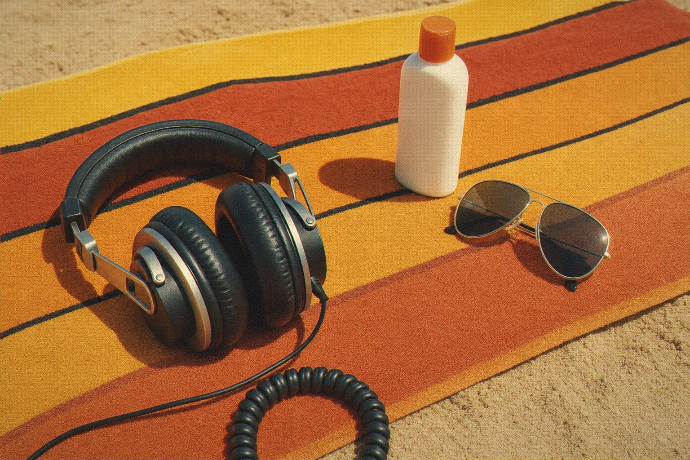
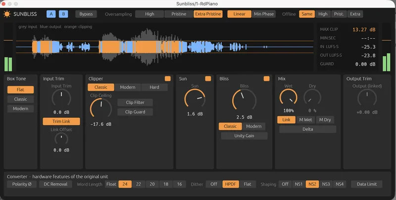

Loud is a lovely place to spend the summer.
There's a particular kind of loud that only happens when an analogue-to-digital converter is pushed a little past polite. It's dense and warm, and strangely it never sounds broken.
Sunbliss is a mastering clipper and soft saturator built to behave exactly like that. Every curve came from measuring real audio and reading public manuals, and the method is documented on GitHub.
Turn it up and the record gets louder and warmer, not uglier.

Converter-style clipping and soft saturation.
Sunbliss
Converter-style clipper and soft saturation.
Open source · AU · VST3 · CLAP
Jardim SonoroOpen-source audio research
Download: jardimsonoro.com/audioSource & issues: github.com/nagualcode/sunbliss
Mastering11